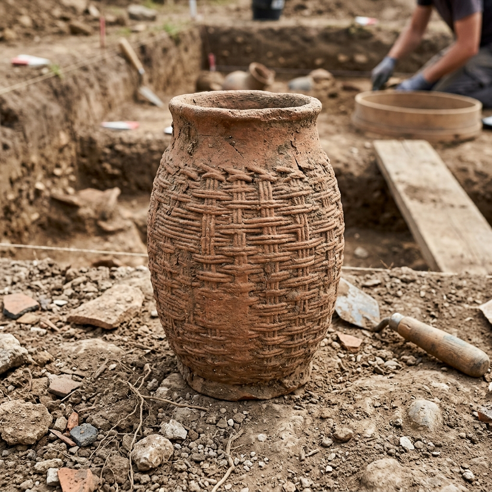
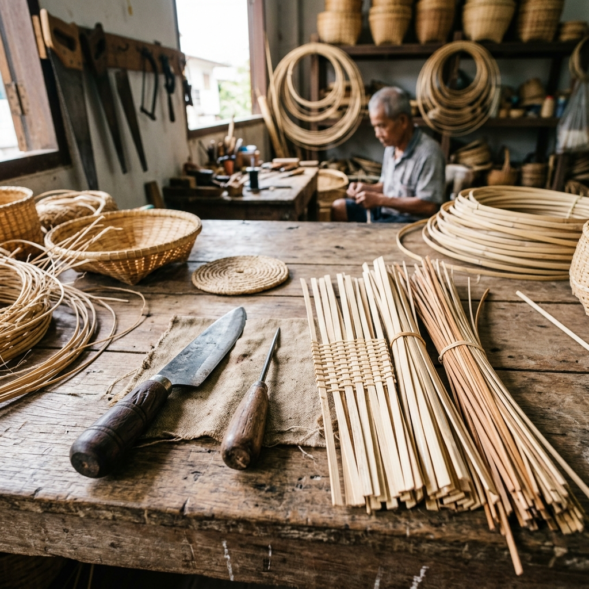

Origins, Evolution, Materials, and Techniques

Illustration: Traces of woven patterns discovered on prehistoric pottery.
The exact period when humanity first began creating wickerwork is unknown. However, traces of woven patterns have been found on prehistoric pottery, suggesting that humans possessed weaving skills long before recorded history. A prime example is a small, pre-historic earthenware vessel with a round mouth and a square base found at the Ban Chiang archaeological site in Udon Thani (presently at the National Museum Bangkok).
Another piece of cylindrical pottery from an archaeological site in Lopburi (currently housed at the King Narai National Museum) also displays clear imprints of woven basketry on its exterior. It is thus hypothesized that early pottery was formed by pressing clay inside a woven basket. Once dried, the vessel was fired, burning away the wicker mold and leaving behind the intricate woven imprint on the hardened clay. This indicates that weaving predates the classical methods of pottery formation (like the paddle-and-anvil or the potter's wheel).
Prior to using wickerwork as molds, early humans might have utilized fruit shells like gourds. However, the use of processed fibers—such as split bamboo or rattan—represented a significant developmental leap in tool-making, allowing humans to dictate precise shapes, sizes, and degrees of durability.
Weaving using specialized master molds is still observed today. For instance, basket weavers in Phrae province construct a primary "master basket" which serves as a template to ensure uniform sizes for subsequent baskets. Northern Thai hats (Gub) are also formed using turned wood molds, covered with palm leaves, ensuring absolute consistency.
As such, wickerwork remains a supremely essential craft in agricultural societies, serving as bespoke, self-made utensils forged directly from regional natural resources.
Countless flora species native to Asia exhibit properties suitable for basketry. Thailand, specifically, boasts a diverse range of bamboo and vines deeply intertwined with its agrarian lifestyle.
Bamboo is undeniably the most prominent raw material. It grows rapidly, is exceptionally strong yet flexible, and permeates every region of Thailand.
Commonly found in the central and southern plains near riversides, characterized by its yellowish stem. Local villagers plant it as natural windbreakers, consume its shoots, and use its tough stalks for ladders and various woven goods.
Native to central, northern, and western corridors near Myanmar. It has elegant, slender, and straight stalks growing in dense clumps, making it highly versatile for fishing gear and fine basketry.
A northern bamboo found in mixed deciduous forests. Known for its very thin walls and extraordinarily long internodes (50-70 cm), making it ideal for water containers and delicate regional crafts.
Famously used to bake sticky rice (Khao Lam). Aside from culinary uses, its thin walls and pale green aesthetic provide excellent material for woven housing partitions and structural works.
A climbing palm with a completely smooth, incredibly tough, and pliant outer skin. Used dominantly in high-end structural furniture and bindings.
A type of climbing fern highly abundant in Southern Thailand. Only the resilient outer bark is stripped into ultra-fine threads, famously woven into exquisite, premium handbags over structural frames.
A sedge mainly found around the Songkhla lake basin. It requires flattening (pounding) and complete sun-drying before it is magically woven into durable mats and fashion sacks.

Illustration: Fundamental wickerwork tools (Cleaver, Awl, Wooden Pliers)
Wickerwork is a time-honored craft that utilizes surprisingly minimalist, locally forged tools. The core instruments include:
Pointed metal instruments used for piercing, prying, and making way for rattan bindings.
A large clamp made from dense hardwood (e.g., Rosewood). It acts as a mechanical third-hand to tightly pinch the rims of baskets (like a Krabung) while the artisan binds them fiercely with rattan.
Transforming processed fibers into 3D geometry requires mastery of several fundamental weaving patterns:
The oldest, most foundational angle weave. It creates orthogonal tension by crossing vertical warp strips with horizontal weft strips. Up one, down one (Lai Nueng), which evolved into complex twill variants like Up two, down two (Lai Song).
Devoid of rigid verticals and horizontals, strips are woven diagonally, locking into hexagonal or honeycomb structures. This creates porous, highly breathable baskets like 'Cha-lom' (fruit baskets) and chicken coops.
Used specifically for limp materials like Yan Lipao, water hyacinth, or thin rattan. The fibers are woven around a rigid skeleton, or coiled progressively from the center outward, locked with sequential knots.
Artistic, non-structural weaving used primarily for creating toys, ornaments, and religious offerings. Classic examples include the woven palm-leaf grasshopper or the 'Pla Tapian' fish mobiles.